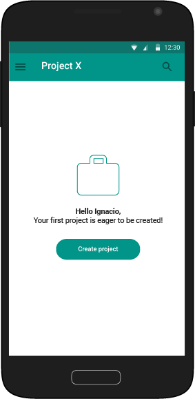
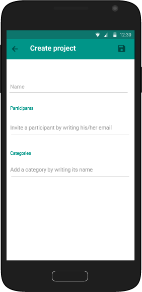

Project Creation
After logging in, the user is invited to create his first project

Empty states are a great way to guide the user through the first times he performs an action. Referring to the user by his name is an effortessly way to make him feel welcomed.

In the Create Project screen, the user will be able to name the project, add participants and categories. Even though they can also do it later, asking them to do it at this moment helps them to layout the first steps of their projects.

User then clicks in the Save button located at the top and the Project is finally created.